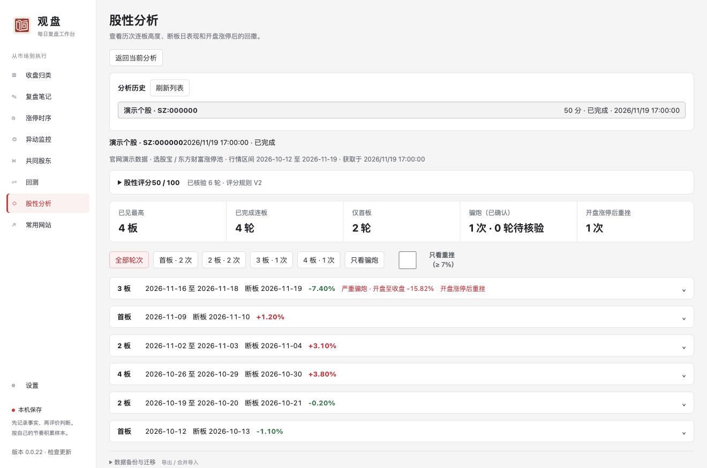

记录事实
先留下盘面发生了什么，
再写下你如何理解它。

记住一次涨跌很容易，记住当时为什么这样判断更难。
观盘把分散的观察、计划与反馈串在一起，
帮你看见自己判断的变化。
先留下盘面发生了什么，
再写下你如何理解它。
把预期和实际放在一起，
让每次复盘都有依据。
保留自己的案例和规则，
把下一次做得更清楚。
八个功能页和一个独立设置入口。
默认从收盘归类开始，也可以自选启动页。
从当日涨停池拖入自定义分组，也可搜索或批量补充个股。卡片并排展示连板标签、竞价与收盘指标，能标重点、写个股和分组备注，再把整张分组图复制出来。
用 Markdown 写主帖，用跟帖记录后续变化。支持搜索、置顶和编辑；点击识别到的股票可请求打开 Windows 同花顺分时。
按日期查看触板股票的分钟量能，可只显示自己选中的股票。获取数据时可先切到其他页面，回来继续查看同一天的进度。
把个股加入监控名单，查看按收盘数据测算的普通和严重异动参考线。可调整指数涨跌假设，展开核对窗口、参考价格与数据缺口。
选定一只股票，从最新已披露的十大流通股东出发，查找共享股东的 A 股。逐项查看股东名称、关联股票与报告期，也可筛除结算托管账户。
选择基准日的股票和首板到四板中的一档，按历史日期对照同板个股的次日表现。可回看本机历史记录，或把结果复制成图片。
从首板开始，逐轮查看日期、最高板数与断板日涨跌幅。单独筛选开盘涨停后重挫、开盘即开板且未回封的记录，结合已核验样本查看评分，并回看分析快照。
保存常用网址，可自定义名称，也可读取网页标题。下次复盘时，点击收藏卡片即可在系统浏览器打开。
选择启动时打开的页面，更新和搜索本机股票库，按需配置数据源授权。通过「数据与备份」导出复盘记录，换机时预览并合并导入。
行情和事件按数据源可核验的范围展示。异动参考线基于收盘测算，持仓以披露报告期为准。
从第一条记录开始，数据就留在你的电脑里。
记录保存在本机，成功获取过的行情与时序可离线回看。无需注册，不自动上传个人复盘。
导出备份，在新电脑合并导入。迁移前校验、备份，失败时回滚。当前不提供跨设备自动同步。
应用内检查新版本、下载安装，更新包经过签名校验；安装前先备份。
Windows 用户下载当前版；Mac 用户可查看历史版，恢复更新后另行说明。
安装包托管于 GitHub · 可在发布页查看最新版本
64 位 Windows · EXE 安装器
前往 Windows 下载页 EXE 安装包 · 发布页另有 MSIM 系列芯片 · macOS 12 或更新版本
查看 Mac ARM 历史版 v0.0.10 · 历史 DMG · 暂缓更新Intel 芯片 · macOS 12 或更新版本
查看 Mac Intel 历史版 v0.0.10 · 历史 DMG · 暂缓更新不确定 Mac 芯片？点左上角 →「关于本机」，查看「芯片」或「处理器」。
全部版本与备用下载 ↗目前 macOS 安装包尚未进行 Apple 公证，Windows 安装包尚未进行代码签名，安装时可能出现系统提示。应用内更新包另有签名校验。已有用户可在应用左下角「检查更新」。
使用之前，你可能想知道。
适合希望系统记录 A 股收盘表现、板块逻辑与历史同板晋级情况的用户。你可以整理分组、写下笔记，再结合时序和回测核验自己的观察。它是一款复盘工具，不提供自动交易或买卖建议。
当前公开版本可直接免费下载使用，无需注册账户。你可以先体验，再决定是否把它加入日常复盘流程。
使用新浪、腾讯、东方财富等公开免费接口。不同接口有覆盖范围和时效限制，也可能限流或连接失败。涨停时序不保证全市场、完整逐笔事件或任意日期回补；长时间跨度的回看依赖此前成功保存的本机存档。封板、开板与放量的先后不等于因果。
记录保存在本机，断网仍可填写复盘、查看已有缓存。换电脑时，可在设置中导出收盘归类、笔记、收藏和已支持的行情存档，再到新电脑合并导入。股性分析与回测历史保存在各自的本机档案中，当前不包含在这份迁移文件内。
目前维护 Windows 桌面版，Mac 提供历史版本。这个网站用于介绍与下载，不是在线复盘工作台；暂未提供手机应用。
Windows 可在应用内检查更新，安装前会自动备份。如果网络中断或应用内下载超时，可用浏览器从完整发布页下载 EXE，退出应用后安装升级，无需卸载旧版。Mac 暂不提供新版本自动更新。源码仓库不公开，公开仓库提供官网、安装包和更新文件。